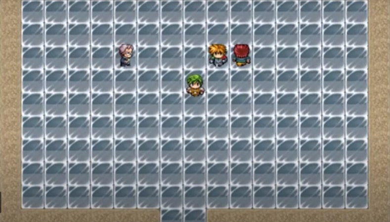
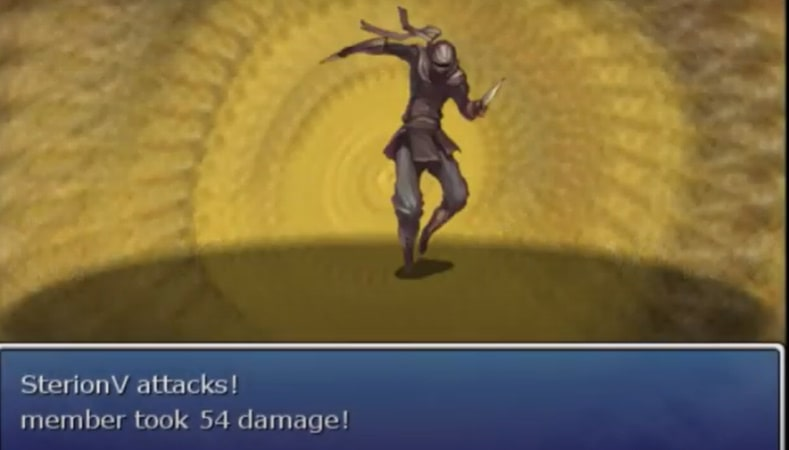

Description:
You play as an new player named SterionV that just bought a new game named the Rija System when suddenly Team Virus starts to wreak havoc, what is the meaning of this. Is there something else at play here?
-----------------------------------------------------------------------------------------------------------------------------------------------------------------------



-----------------------------------------------------------------------------------------------------------------------------------------------------------------------
Game Page
-----------------------------------------------------------------------------------------------------------------------------------------------------------------------
The game doesn't even work anymore, because there is something missing inside of the files and I have no idea where the project went when I wanted to fix the issue.
Right now I really think that this game isn't great anymore what I used to think, but it was a start of everything and if I haven't made this game, I would not have been here where I am today(even though I made games in the past in a other engine before).
And I haven't written anything on it what I could remember, I just went with the flow of the story, I didn't had any goal in mind and just kept up creating more and more.
-----------------------------------------------------------------------------------------------------------------------------------------------------------------------
I made this game more as an experiment, because it had alot of experimental elements inside it, I even tried to put alot of characters that has alot of copyright and I never thought of making more games like this.
I even can't find the files for what I made the game for, so that's why you won't see to much in here
-----------------------------------------------------------------------------------------------------------------------------------------------------------------------